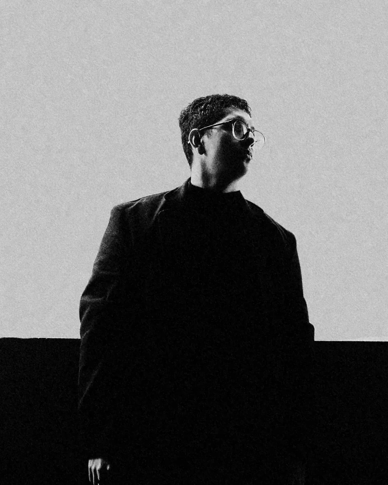

Transmisión recibida · Año 3000 → 2026
Origen de la señal · Costa Rica, Tierra · 9.93° N 84.08° W
Integridad · 99.7% · Decodificando
ROMMUSEUSER
01 · LA MÁQUINAROM
Memoria que no se borra. Todo lo que ya sonó.
02 · LA IDEAMUSE
La música ya existe. Solo hay que sintonizarla.
03 · EL HUMANOUSER
Tú. El cuerpo donde la frecuencia se vuelve real.
Cierra los ojos. Siente. Esta música viajó mil años para encontrarte.
House y techno, con alma melódica
DJ y productor desde Costa Rica. ROMMUSER no compone, sintoniza. Recibe lo que ya vibra y lo trae a la tierra para que te olvides de todo un rato.
Canales · 09
Encuentra tu frecuencia
111.1 Hz
Pieces
Firmado en · DENAR RCRDSElectric EdenLate HoursHouseYouNiteLVLD MusicJendex Records
El artista
Antes del sonido, el vacío

Todo vibra.
Tú lo haces real.
El espacio. La música. Tú.
10+ años de producción musical y 5+ de DJ. 7 originales y un remix firmados. Una selección que conecta Costa Rica con sonidos internacionales, y cada set encuentra su camino en la pista.
Bitácora de la Tierra
Un espacio compartido
PRÓXIMO ATERRIZAJE
MAMBO
Casa Grande · Costa Rica · 13.11.2026
—para la señal
Abrir canal
Hablemos de una fecha
BOOKINGSbookings@rommuser.com
CONTACTO GENERALcontact@rommuser.com